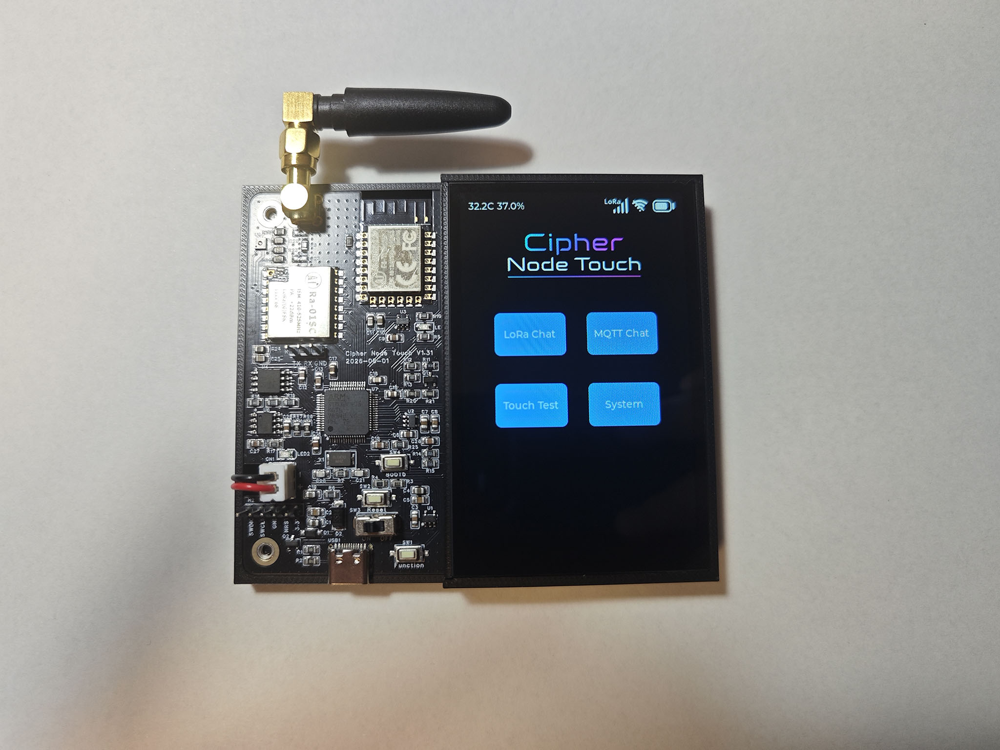
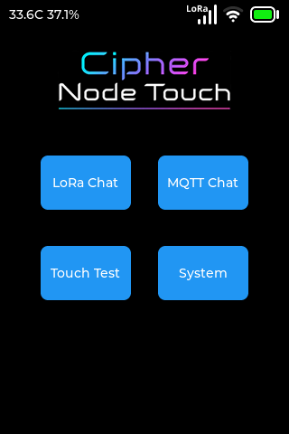
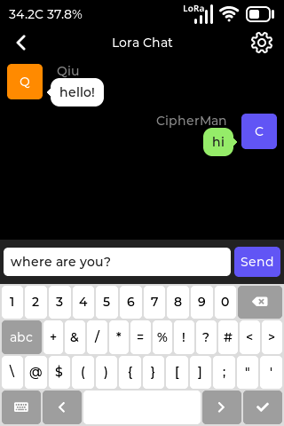
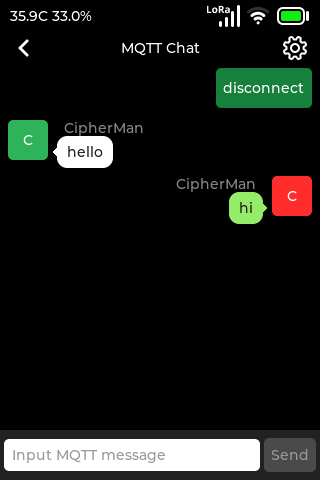
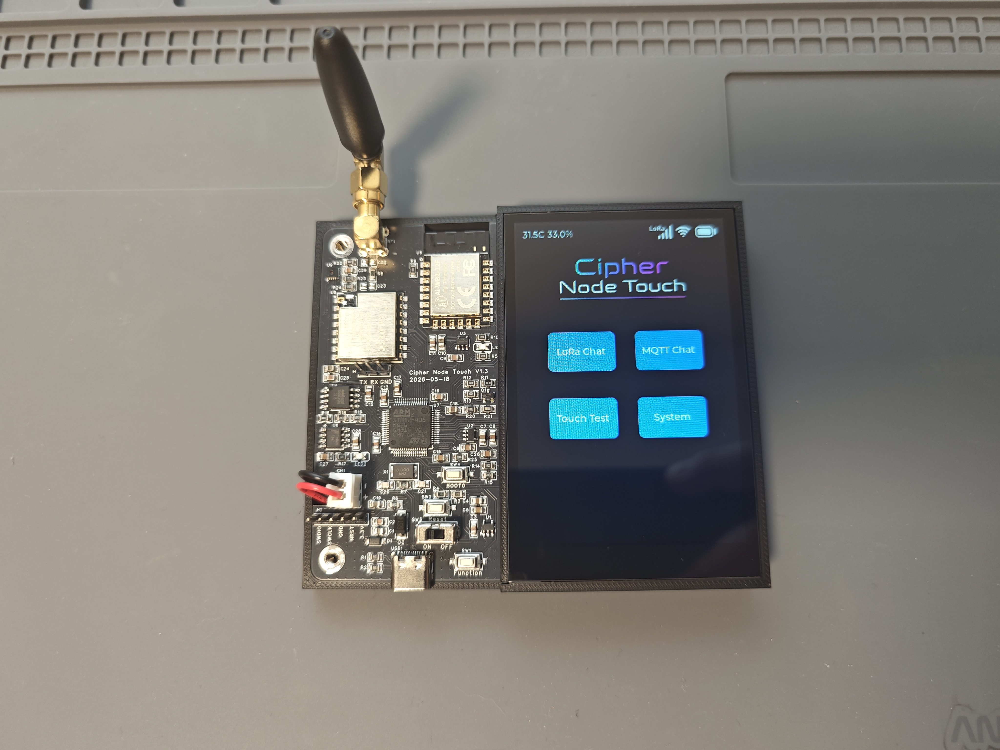

通用型 MCU
基于 STM32F405RGT6，主频 168MHz，主流方案，适合学习，也适合产品开发参考。
Product Introduction
Cipher Node Touch 是一款基于 STM32F405RGT6 的触控无线开发板，集成 IPS 电容触摸屏、LoRa、Wi-Fi 与 LVGL 图形界面，配套开源代码和丰富 Demo。工程内置 SKILL.md，支持 AI Agent 辅助编程与调试，助你在 AI 时代更高效地学习嵌入式开发、打造交互设备原型。

Key Features
基于 STM32F405RGT6，主频 168MHz，主流方案，适合学习，也适合产品开发参考。
编译与烧录流程完全命令行化，更适用于AI时代与自动化构建。
项目目录内置 SKILL.md，适合 AI agent 协助开发，助力学习AI在嵌入式开发中的应用。
支持 Wi-Fi，除了TCP/UDP等基础协议外，还内置MQTT等协议。
基于 LLCC68 芯片实现 LoRa 通信，在加密传输聊天Demo中学习LoRa的应用。
电容式触摸屏，支持多点触控。
成熟 GUI 方案，便于构建流畅、可定制、易维护的视觉界面。
板载高性能温湿度传感器。
预留锂电池充电电路与接口，用户可自行增加锂电池，壳体内部已预留空间。电池尺寸不大于 70mm × 40mm，厚度不大于 5mm。
支持 USB 通信，支持U盘模拟与虚拟串口，支持U盘固件升级。
源码开源，持续更新，短视频平台演示的Demo同步更新。
Demo 同时支持 CMake 与 Keil 两种编译环境，尽可能适应不同习惯的开发者。
Product Form Demo

采用接近手机交互逻辑的 UI 布局，让你学习到真实产品的 UI 实现方式。

将 LoRa 通信 Demo 设计成有趣的聊天形式：多台开发板配置相同的 LoRa 参数和通信密钥后，即可实现多人聊天。

将 Wi-Fi MQTT 通信 Demo 设计成有趣的全球聊天室，让开发者与全球“板友”实时交流，用更有趣的方式呈现原本枯燥的技术。
Board Gallery

Specifications
| 参数 | 内容 |
|---|---|
| MCU | STM32F405RGT6 |
| 主频 | 168MHz |
| 屏幕 | IPS 触摸屏，分辨率 480x320，电容式触摸 |
| WiFi | 支持 |
| LoRa | 支持 |
| USB | USB 2.0 Device |
| GUI | LVGL |
| 电源 | Type-C / 锂电池（锂电池需自行购买，接口与充电电路已预留） |
| 开发环境 | CMake / Keil |
Open Source Ecosystem